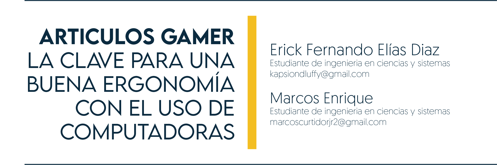

5 Articulos gamer, la clave para una buena ergonomía con el uso de computadoras

5.1 Introducción
La vida moderna está cada vez más relacionada con la tecnología y, en particular, con el uso de computadoras. Pasamos largas horas frente a una pantalla, lo que puede tener un impacto negativo en nuestra salud y bienestar. Los trastornos de la postura son un problema cada vez más común pudiendo causar dolores de cabeza, cuello y espalda, fatiga y otros problemas de salud.
5.2 Artículo
Es necesario analizar los esfuerzos que se están realizando para mejorar la ergonomía en el entorno de trabajo y abordar la importancia de una postura adecuada para la salud y el bienestar a largo plazo. Tenemos que estar al tanto sobre la importancia de prestar atención a la postura y la ergonomía en el uso de computadoras y así tomar medidas para prevenir los trastornos de la postura.
Es aquí donde entran en juego los utensilios gamer. Estos accesorios están diseñados específicamente para mejorar la comodidad y la postura del usuario durante la utilización de una computadora. Es necesario analizar la importancia de utilizar estos productos y cómo pueden ayudar a prevenir lesiones y mejorar la experiencia del usuario.
Haber trabajado en un computador durante una larga jornada puede llegar a ser bastante agotador para un Ingeniero en Sistemas, más aún si no se toman en cuenta factores que influyen en la eficacia de nuestras tareas. Durante estas largas jornadas es muy común que el cuerpo de una persona se encuentre resentido, pero hay que tomar en cuenta que todo ese resentimiento puede llegar a causar enfermedades a largo plazo, por esa razón es muy importante contar con una buena ergonomía.
Al hablar de ergonomía, nos referimos al “estudio de la adaptación de las máquinas, muebles y utensilios a la persona que los emplea habitualmente, para lograr una mayor comodidad y eficacia.”, pero no solamente es importante conocer el concepto, es esencial saber cómo podemos tener una buena ergonomía mediante una serie de consejos.
- Iluminación: Preferiblemente que sea indirecta, de tal manera que la visión de la pantalla no se vea afectada.
- Pantalla del ordenador: El monitor debe de estar ubicado de frente a una distancia mínima de 50 centímetros.
- Silla y mesa adecuadas: Contar con una silla que sea posible ajustar tanto la altura como la inclinación y una mesa lo suficientemente amplia.
- Correcta postura: Mantener la espalda y hombros rectos sin ningún tipo de tensión, los pies reposados en el suelo, garantizando una buena circulación.
- Descansos periódicos: Nunca está de más tomarse un respiro para poder liberar el estrés y hacer que las ideas fluyan, y aprovechar para estirar los músculos.
Figura 5.1: Trastorno de la postura
Conocer un poco sobre los artículos gamers nos puede ayudar a comparar con los artículos tradicionales y así poder mejorar nuestra ergonomía.
Teclado Gamer: A diferencia de los teclados tradicionales, conocidos como teclados de membrana, estos teclados cuentan con switches independientes que aumentan la velocidad de respuesta, son resistentes al contacto con el agua y algunos de estos teclados cuentan con soporte de muñecas.
Mouse Gamer: Cada persona tiene su forma de agarrar un mouse, pero esto puede llegar a ser incómodo si contamos con un mouse tradicional, ya que estos no cuentan con los puntos de apoyo necesarios. Con un mouse gamer esto ya no es un problema, cuentan con diferentes diseños que se adaptan al tipo de agarre que tiene cada persona.
Silla Gamer: Cuántos de nosotros solamente contamos con una silla de madera, que muchas veces llegan a ser incómodas luego de esas largas jornadas, un mundo totalmente diferente con una silla gamer, ya que estas cuentan con un respaldo reclinable con soportes tanto para el cuello como para la espalda y cuentan con reposador para los brazos.
Standing Desk: Es un tipo de escritorio que nos permite trabajar de pie en lugar de sentados. Su objetivo es proporcionar una alternativa a la postura sentada prolongada, que puede ser perjudicial para la salud, y promover un estilo de vida más activo y saludable. Al usar un standing desk, podemos cambiar su posición a lo largo del día, alternando entre trabajar de pie o sentados, lo que ayuda a reducir el estrés en las articulaciones y mejorar la circulación sanguínea.
5.3 Conclusiones
Los artículos gamer pueden ayudar a mejorar la comodidad y la postura del usuario durante la utilización de una computadora, lo que puede prevenir lesiones y mejorar la experiencia del usuario. Además, es importante conocer y aplicar los consejos de ergonomía en el lugar de trabajo, como lo son tener una buena iluminación, una pantalla y silla adecuadas, una postura correcta y descansos periódicos.
5.4 Referencias
- [1] “La ergonomía del informático”. Galdón. Consultado el 19 de marzo de 2023. https://www.galdon.com/blog/la-ergonomia-del-informatico/ [Último acceso: 19 de marzo de 2023].
- [2] Real Academia Española. Diccionario de la lengua española. s.f. https://dle.rae.es/ [Último acceso: 19 de marzo de 2023].